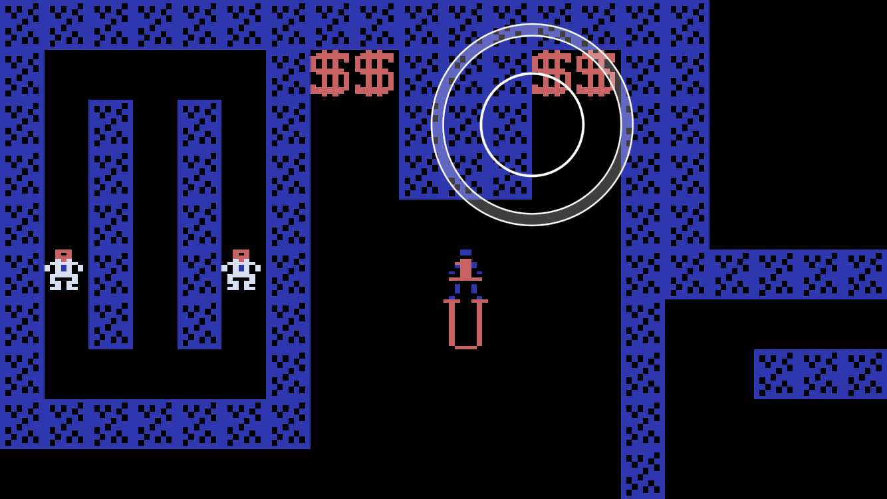

Fun with shaders
There are a total of 3 draw calls and 2 textures in this scene:
The whole tile map is rendered as a single draw call: a single 2-triangle tile that's instanced Row x Column times, using a 3D texture as a texture atlas. I originally used point sprites, but switched to instanced triangles because I wanted to use non-square tiles.
The virtual joystick is rendered as two coarse triangle strip rings, using a 1D radial texture. Note the anti aliasing. (I could have used quads, but wanted to minimize overdraw.)
So far Metal has been fairly straightforward to use, at least for someone like me coming from a DirectX 9 / Xbox 360 / Android OpenGL ES 2.0 background.